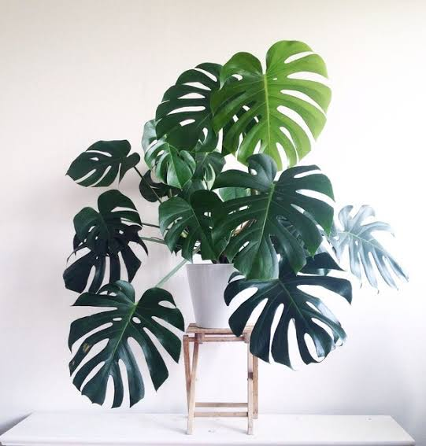
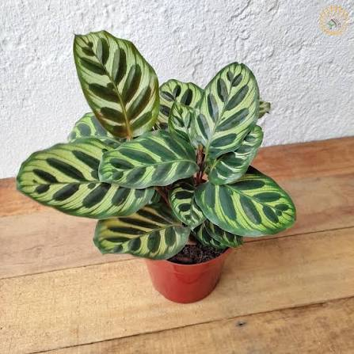
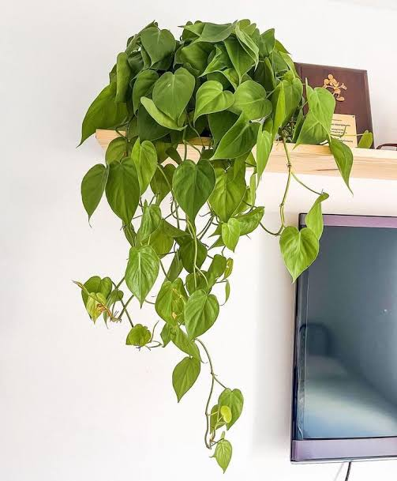
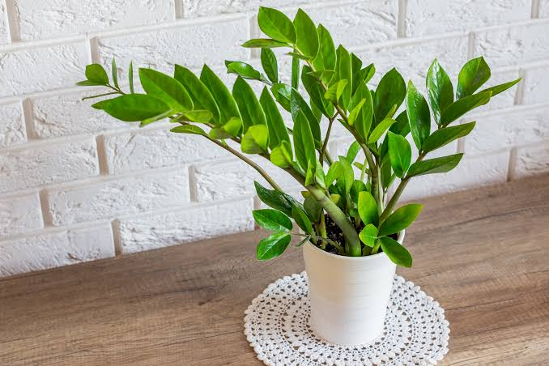

Costela-de-Adão
Monstera deliciosa
- Luminosidade:
- Meia-sombra (Luz indireta brilhante)
- Rega Recomendada:
- A cada 5 a 7 dias (quando o topo secar)
- Toxicidade Pet:
- Tóxica se ingerida por cães e gatos

Seu assistente diário de jardinagem urbana
Consulte os requisitos ideais de luminosidade, rega e umidade para espécies comuns.
Monstera deliciosa

Dracaena trifasciata

Goeppertia makoyana

Epipremnum aureum

Zamioculcas zamiifolia

Echeveria elegans